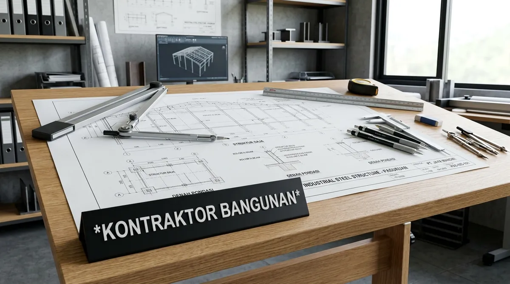

Mengapa Memilih Jasa Arsitek Kediri Berpengalaman Sangat Krusial?
Arsitek lokal berpengalaman memahami betul karakter iklim mikro Kediri, peraturan koefisien tata ruang daerah, serta ketersediaan material lokal berkualitas tinggi.
Merancang rumah di Kediri membutuhkan adaptasi desain khusus terhadap perbedaan suhu siang dan malam hari serta kelembapan udara regional. Berdasarkan data Ikatan Arsitek Indonesia (IAI) Wilayah Jawa Timur 2025/2026, rumah yang dirancang dengan prinsip arsitektur bioklimatik di Kediri mampu menurunkan suhu ruang hingga 3,5°C dan menghemat konsumsi energi pendingin ruangan (AC) hingga 38%.
Keunggulan utama mempercayakan hunian Anda kepada arsitek profesional:
- Tata Ruang Ergonomis & Aliran Udara Sehat: Memastikan sirkulasi udara mengalir lancar dari taman samping atau inner courtyard, menghadirkan kesegaran alami ke seluruh ruangan.
- Visualisasi 3D Nyata Sebelum Dibangun: Klien dapat melihat bentuk nyata fasad, tekstur material, dan tata pencahayaan interior sebelum uang miliaran rupiah dihabiskan untuk pembelian material.
- Struktur Terkalkulasi Kuat & Tahan Gempa: Rekayasa pondasi dan pembesian beton bertulang dihitung cermat oleh engineer berlisensi LPJK menyesuaikan kontur tanah setempat.
Bagaimana Tahapan Kerja Jasa Desain Arsitek Rumah di Kediri?
Tahapan kerja terstruktur meliputi konsultasi kebutuhan ruang, survei lokasi, pengembangan konsep denah, visualisasi 3D render, penyusunan DED teknis, hingga kalkulasi RAB.
Kami menerapkan alur kerja transparan berbasis milestone yang menjamin kepuasan pemilik rumah di setiap fase:
1. Konsultasi Kebutuhan & Analisis Lahan
Diskusi mendalam mengenai gaya arsitektur favorit (Modern Tropis, Japandi, Klasik Kontemporer, Industrial), jumlah kamar, fasilitas penunjang (kolam renang, rooftop), serta anggaran pembangunan yang dialokasikan.
2. Konsep Denah & Layout 2D (Schematic Design)
Penyusunan tata letak ruang (zoning) yang memisahkan area publik, privat, dan servis secara higienis dan ergonomis sesuai arah mata angin.
3. Pemodelan 3D Render Eksterior & Interior
Pembuatan visualisasi 3D dengan pencahayaan realistis, memungkinkan klien memilih warna cat, pola granit lantai, aksen kayu, dan material fasad secara akurat.
4. Penyusunan Dokumen DED (Detail Engineering Design)
Penerbitan cetak biru lengkap berisi ratusan lembar detail teknis arsitektur, struktur pondasi, pembesian balok-kolom, instalasi pipa sanitasi, serta titik stopkontak kelistrikan.
5. Rencana Anggaran Biaya (RAB) Terperinci
Penyusunan tabel Analisa Harga Satuan Pekerjaan (AHSP) yang memuat rincian volume material dan upah tenaga kerja sebagai pedoman tender kontraktor yang adil.

Portofolio kelengkapan berkas DED teknis arsitektur dan perhitungan struktur tahan gempa.
Tabel Komparasi Paket Layanan Jasa Arsitek Kediri
Tabel komparasi menguraikan rincian harga per meter persegi, output dokumen desain, dan fitur layanan jasa arsitek di wilayah Kediri.
| Parameter Layanan | Paket Desain Konseptual | Paket Komplit DED & PBG | Paket Luxury 3D + Interior + Pengawasan |
|---|---|---|---|
| Estimasi Biaya / m² | Rp60.000 – Rp85.000 / m² | Rp100.000 – Rp160.000 / m² | Rp180.000 – Rp275.000 / m² |
| Denah 2D & Layout Ruang | Ya (Revisi 2x) | Ya (Revisi 3x) | Ya (Revisi Fleksibel) |
| Visualisasi 3D Render | 3D Eksterior Fasad (2 View) | 3D Eksterior & Interior (5-8 View) | 3D Eksterior, Interior & Animasi Video Walkthrough |
| Gambar Kerja DED Teknis | Tidak Termasuk | Lengkap (Arsitektur, Struktur, MEP) | Sangat Lengkap + Detail Furnitur Custom |
| RAB Konstruksi Detail | Estimasi Kasar | Ya (RAB Lengkap AHSP) | Ya (RAB Detail + Kurva S) |
| Bantuan Berkas PBG | Draft Sketsa | Siap Upload SIMBG Kediri | Siap Upload + Tanda Tangan Arsitek Ber-STRA |
| Pengawasan Berkala Site | Opsional Online | 2x Kunjungan Lapangan | 6-10x Pengawasan Rutin Lapangan |
- Periksa Portofolio Fisik Bangunan: Jangan hanya terpesona oleh render 3D digital; mintalah bukti foto proyek bangunan riil yang telah selesai dibangun (built project) di wilayah Jawa Timur.
- Sampaikan Batasan Anggaran (Budget Limit) di Awal: Arsitek yang hebat mampu menghasilkan desain estetis tanpa memaksakan material mewah yang melebihi kemampuan finansial Anda.
- Pilih Layanan Terintegrasi Desain & Bangun (Design & Build): Jika ingin praktis, pilih biro arsitek yang terafiliasi langsung dengan divisi kontraktor pelaksana agar tidak terjadi saling lempar tanggung jawab antara perancang dan tukang.
Pertanyaan yang Sering Diajukan (FAQ)
Kesimpulan Praktis
Rumah idaman yang nyaman, sejuk, dan megah berakar dari perencanaan arsitektur yang matang dan terukur secara teknis. Percayakan rancang bangun hunian Anda kepada biro arsitek Kediri berlisensi resmi.